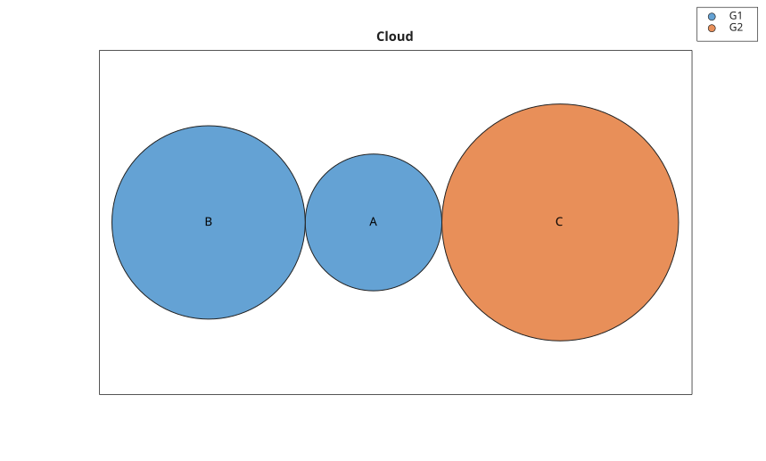
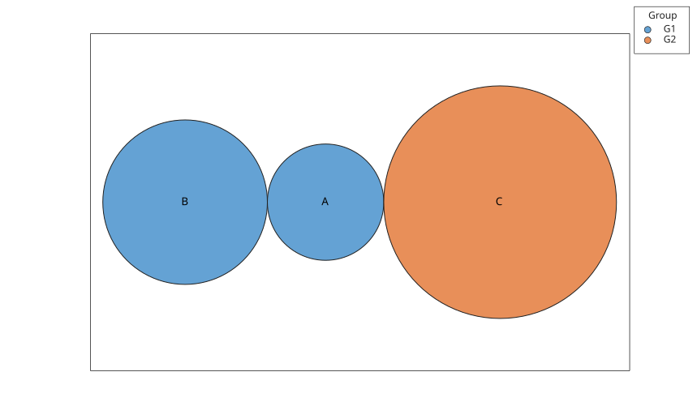

bubblecloud(sizes)
bubblecloud(sizes, labels)
bubblecloud(sizes, labels, groups)
bubblecloud(tbl, sizeVariable)
bubblecloud(tbl, sizeVariable, labelVariable, groupVariable)
bubblecloud(..., propertyName, propertyValue)
h = bubblecloud(...)
bubblecloud cree un objet graphique bubblecloud a partir de tailles de bulles numeriques. Les etiquettes et les groupes peuvent etre fournis sous forme de vecteurs ayant le meme nombre d'elements que les tailles.
Une table peut etre utilisee en indiquant les variables de taille, d'etiquette et de groupe.
L'objet retourne expose les donnees avec SizeData, LabelData et GroupData. Les proprietes d'apparence prises en charge incluent Title, LegendTitle, FaceColor et EdgeColor.
La page proprietes de bubblecloud liste les proprietes d'objet prises en charge.
bubblecloud([10 20 30], {'A','B','C'}, {'G1','G1','G2'}, 'Title', 'Cloud');
t = table([5; 10; 20], {'A'; 'B'; 'C'}, {'G1'; 'G1'; 'G2'}, ...
'VariableNames', {'Size', 'Label', 'Group'});
bubblecloud(t, 'Size', 'Label', 'Group');